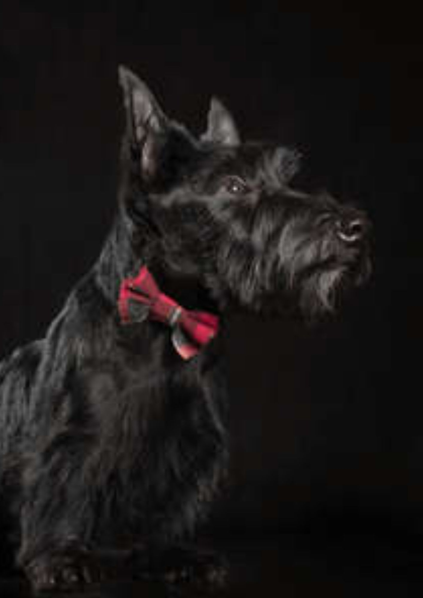
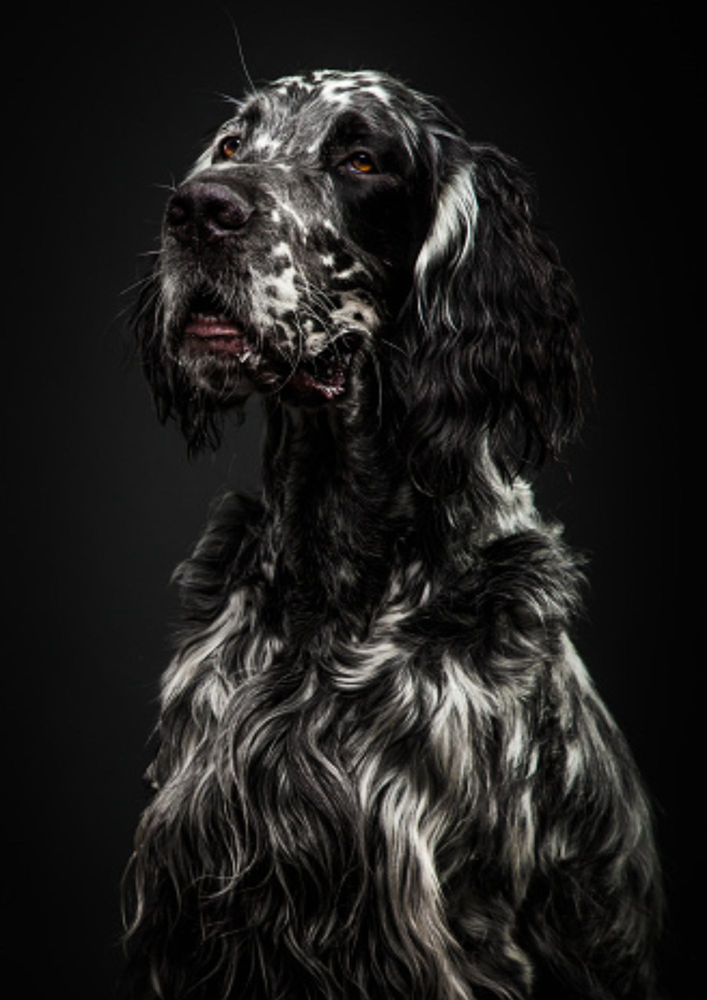
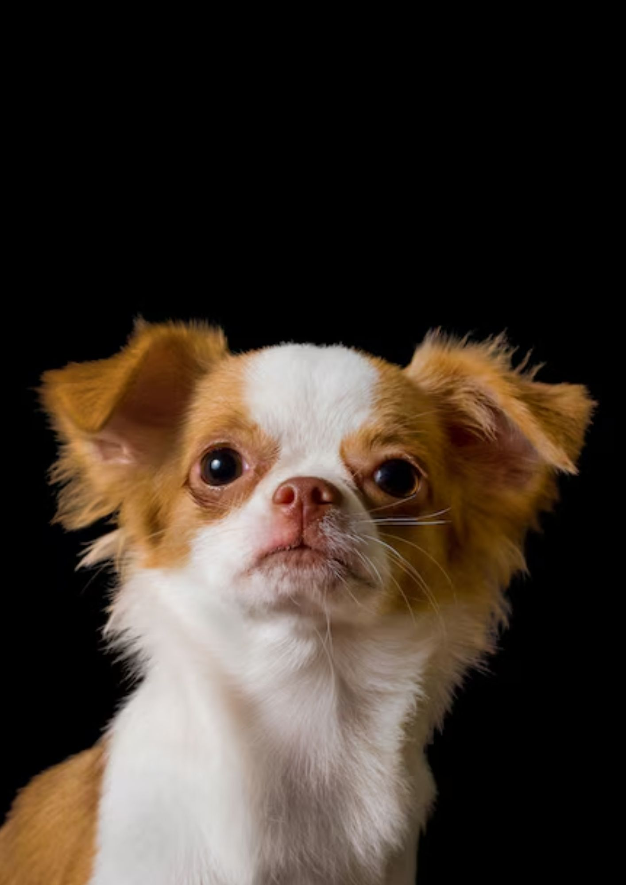

Rencontrez nos chiots

Sushi
Calme et malinne, Sushi est la compagnon idéale pour une personne plus âgée à la recherche d'une expérience plus tranquille. Elle est obéissante et a un superbe pelage lustré.

Muffin
Si vous avez de jeunes enfants, Muffin est le chien qu'il vous faut. Elle aime tellement jouer que vos enfants seront épuisés à la fin de la journée. Elle adore aussi les câlins le soir !

Thalia
Intelligente, alerte et un peu espiègle, Thalia est toujours prête pour l'aventure. Que vous sautiez dans votre voiture pour partir en week-end ou que vous alliez courir, elle sera toujours à vos côtés.
Orus
Orus est l'un des chiens les plus attendrissant que nous n'ayons jamais eu. Bien que timide, il est capable de sentiments très profonds et recherche une famille qui l'aimera et l'appréciera.

Valko
Si vous aimez enseigner des tours à votre chien, Valko est pour vous. Il adore courir, rapporter la balle et attraper un frisbee en plein vol. C'est le compagnon idéal pour un couple dynamique.
